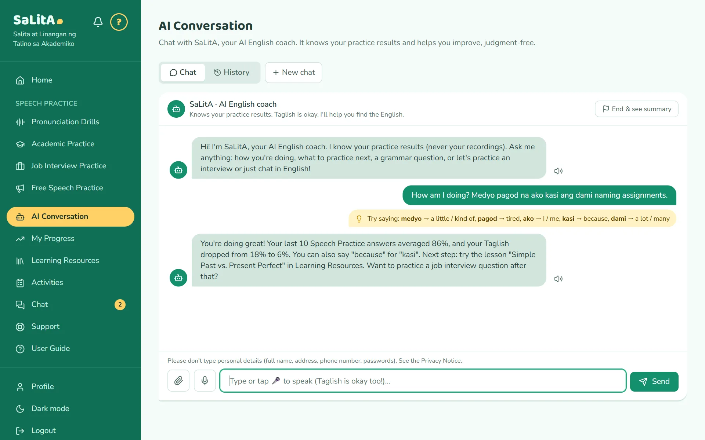
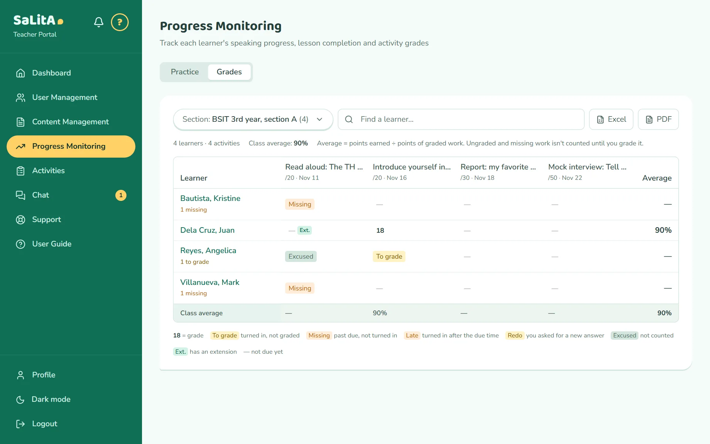
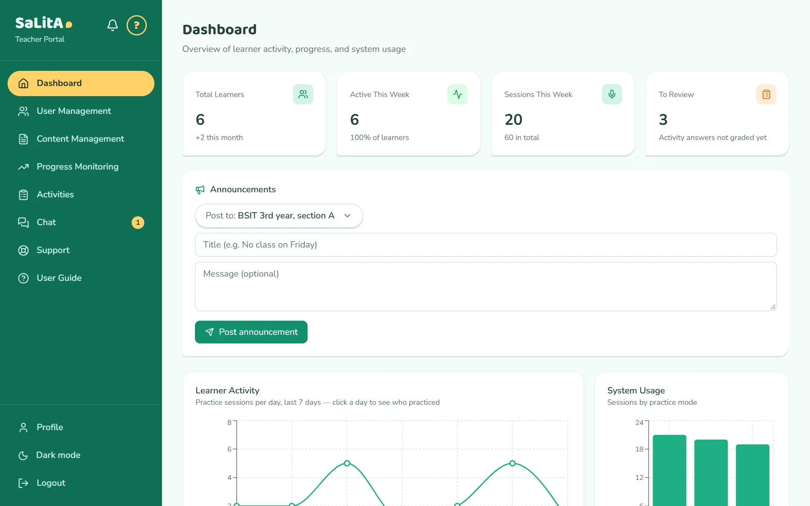

Featured project · Capstone

SaLitA — AI speech coaching for Filipino learners
A translanguaging-based AI speech coach that helps students who struggle with English speaking confidence. Taglish is treated as a bridge, not a mistake. Solo-built: design, code, database, AI integration, deployment.
3user roles (Learner, Teacher, Super Admin)
38database tables with RLS
25/25attack tests blocked
Web + APKone React codebase
ReactViteTailwind CSSFlask (Python)SupabasePostgreSQL + RLSCapacitor (Android)Whisper speech-to-textGroq / Gemini LLMsVercel
AI speech analysis with explainable scoring
- Records the learner, transcribes with Whisper (Groq, with Cloudflare as automatic backup).
- My own code detects filler words, Taglish %, pace and long pauses; an LLM checks grammar and whether the answer is on topic.
- Transparent score: English use 40% · fluency 30% · grammar 30% × relevance — easy to defend and explain.
- Pronunciation drills for 15 sounds Filipino speakers find hard (F/P, V/B, TH…).

An AI coach that knows your progress
- Chat coach that reads the learner's own scores, quizzes and activities (never other people's data).
- Voice messages, saved chat history, and guardrails: it helps learners understand but never writes graded answers.
- Daily usage limits per person so one user can't drain the free AI quotas.

An LMS for teachers
- Sections with class codes, activities with due dates, rubrics, extensions and a gradebook with Excel/PDF export.
- Real-time chat, notifications and announcements (Supabase Realtime).
- AI lesson drafts with a human in the loop: teachers review before publishing.

Secure, private and deployed
- Row-level security on every table; deactivation, roles and limits enforced by the database, not just the UI.
- Data Privacy Act (RA 10173) features: consent, download-my-data, delete-my-account.
- Live on Vercel (custom domain salita.me) with a serverless Python backend and a signed Android release APK.